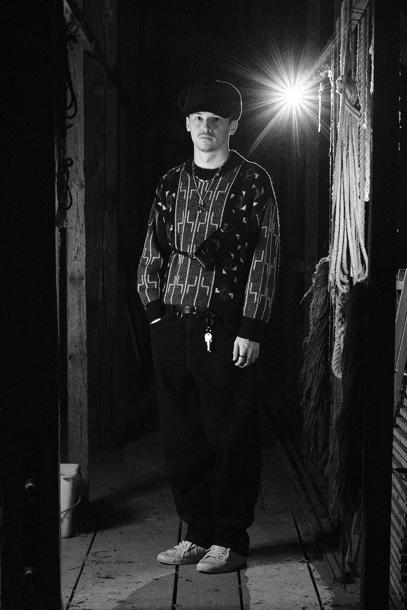

A selection of group shows and exhibitions Nikita has participated in since 2023.
For all inquiries, whether it's collaboration, exhibitions, or anything else, feel free to use the form below or reach out directly on Instagram at @nikiszeug.
Die folgenden Hinweise geben einen einfachen Überblick darüber, was mit Ihren personenbezogenen Daten passiert, wenn Sie diese Website besuchen. Personenbezogene Daten sind alle Daten, mit denen Sie persönlich identifiziert werden können. Ausführliche Informationen zum Thema Datenschutz entnehmen Sie unserer unter diesem Text aufgeführten Datenschutzerklärung.
Die Datenverarbeitung auf dieser Website erfolgt durch den Websitebetreiber. Dessen Kontaktdaten können Sie dem Abschnitt „Hinweis zur Verantwortlichen Stelle“ in dieser Datenschutzerklärung entnehmen.
Ihre Daten werden zum einen dadurch erhoben, dass Sie uns diese mitteilen. Hierbei kann es sich z. B. um Daten handeln, die Sie in ein Kontaktformular eingeben.
Andere Daten werden automatisch oder nach Ihrer Einwilligung beim Besuch der Website durch unsere IT-Systeme erfasst. Das sind vor allem technische Daten (z. B. Internetbrowser, Betriebssystem oder Uhrzeit des Seitenaufrufs). Die Erfassung dieser Daten erfolgt automatisch, sobald Sie diese Website betreten.
Ein Teil der Daten wird erhoben, um eine fehlerfreie Bereitstellung der Website zu gewährleisten. Andere Daten können zur Analyse Ihres Nutzerverhaltens verwendet werden. Sofern über die Website Verträge geschlossen oder angebahnt werden können, werden die übermittelten Daten auch für Vertragsangebote, Bestellungen oder sonstige Auftragsanfragen verarbeitet.
Sie haben jederzeit das Recht, unentgeltlich Auskunft über Herkunft, Empfänger und Zweck Ihrer gespeicherten personenbezogenen Daten zu erhalten. Sie haben außerdem ein Recht, die Berichtigung oder Löschung dieser Daten zu verlangen. Wenn Sie eine Einwilligung zur Datenverarbeitung erteilt haben, können Sie diese Einwilligung jederzeit für die Zukunft widerrufen. Außerdem haben Sie das Recht, unter bestimmten Umständen die Einschränkung der Verarbeitung Ihrer personenbezogenen Daten zu verlangen. Des Weiteren steht Ihnen ein Beschwerderecht bei der zuständigen Aufsichtsbehörde zu.
Hierzu sowie zu weiteren Fragen zum Thema Datenschutz können Sie sich jederzeit an uns wenden.
Wir hosten die Inhalte unserer Website bei folgendem Anbieter:
Anbieter ist die IONOS SE, Elgendorfer Str. 57, 56410 Montabaur (nachfolgend IONOS). Wenn Sie unsere Website besuchen, erfasst IONOS verschiedene Logfiles inklusive Ihrer IP-Adressen. Details entnehmen Sie der Datenschutzerklärung von IONOS: https://www.ionos.de/terms-gtc/terms-privacy.
Die Verwendung von IONOS erfolgt auf Grundlage von Art. 6 Abs. 1 lit. f DSGVO. Wir haben ein berechtigtes Interesse an einer möglichst zuverlässigen Darstellung unserer Website. Sofern eine entsprechende Einwilligung abgefragt wurde, erfolgt die Verarbeitung ausschließlich auf Grundlage von Art. 6 Abs. 1 lit. a DSGVO und § 25 Abs. 1 TDDDG, soweit die Einwilligung die Speicherung von Cookies oder den Zugriff auf Informationen im Endgerät des Nutzers (z. B. Device-Fingerprinting) im Sinne des TDDDG umfasst. Die Einwilligung ist jederzeit widerrufbar.
Die Betreiber dieser Seiten nehmen den Schutz Ihrer persönlichen Daten sehr ernst. Wir behandeln Ihre personenbezogenen Daten vertraulich und entsprechend den gesetzlichen Datenschutzvorschriften sowie dieser Datenschutzerklärung.
Wenn Sie diese Website benutzen, werden verschiedene personenbezogene Daten erhoben. Personenbezogene Daten sind Daten, mit denen Sie persönlich identifiziert werden können. Die vorliegende Datenschutzerklärung erläutert, welche Daten wir erheben und wofür wir sie nutzen. Sie erläutert auch, wie und zu welchem Zweck das geschieht.
Wir weisen darauf hin, dass die Datenübertragung im Internet (z. B. bei der Kommunikation per E-Mail) Sicherheitslücken aufweisen kann. Ein lückenloser Schutz der Daten vor dem Zugriff durch Dritte ist nicht möglich.
Die verantwortliche Stelle für die Datenverarbeitung auf dieser Website ist:
Nikita Bitsch
Haupstraße 7
77749 Schutterwald
Telefon: 0151 2382183
E-Mail: info@nikiszeug.de
Verantwortliche Stelle ist die natürliche oder juristische Person, die allein oder gemeinsam mit anderen über die Zwecke und Mittel der Verarbeitung von personenbezogenen Daten (z. B. Namen, E-Mail-Adressen o. Ä.) entscheidet.
Soweit innerhalb dieser Datenschutzerklärung keine speziellere Speicherdauer genannt wurde, verbleiben Ihre personenbezogenen Daten bei uns, bis der Zweck für die Datenverarbeitung entfällt. Wenn Sie ein berechtigtes Löschersuchen geltend machen oder eine Einwilligung zur Datenverarbeitung widerrufen, werden Ihre Daten gelöscht, sofern wir keine anderen rechtlich zulässigen Gründe für die Speicherung Ihrer personenbezogenen Daten haben (z. B. steuer- oder handelsrechtliche Aufbewahrungsfristen); im letztgenannten Fall erfolgt die Löschung nach Fortfall dieser Gründe.
Sofern Sie in die Datenverarbeitung eingewilligt haben, verarbeiten wir Ihre personenbezogenen Daten auf Grundlage von Art. 6 Abs. 1 lit. a DSGVO bzw. Art. 9 Abs. 2 lit. a DSGVO, sofern besondere Datenkategorien nach Art. 9 Abs. 1 DSGVO verarbeitet werden. Im Falle einer ausdrücklichen Einwilligung in die Übertragung personenbezogener Daten in Drittstaaten erfolgt die Datenverarbeitung außerdem auf Grundlage von Art. 49 Abs. 1 lit. a DSGVO. Sofern Sie in die Speicherung von Cookies oder in den Zugriff auf Informationen in Ihr Endgerät (z. B. via Device-Fingerprinting) eingewilligt haben, erfolgt die Datenverarbeitung zusätzlich auf Grundlage von § 25 Abs. 1 TDDDG. Die Einwilligung ist jederzeit widerrufbar. Sind Ihre Daten zur Vertragserfüllung oder zur Durchführung vorvertraglicher Maßnahmen erforderlich, verarbeiten wir Ihre Daten auf Grundlage des Art. 6 Abs. 1 lit. b DSGVO. Des Weiteren verarbeiten wir Ihre Daten, sofern diese zur Erfüllung einer rechtlichen Verpflichtung erforderlich sind auf Grundlage von Art. 6 Abs. 1 lit. c DSGVO. Die Datenverarbeitung kann ferner auf Grundlage unseres berechtigten Interesses nach Art. 6 Abs. 1 lit. f DSGVO erfolgen. Über die jeweils im Einzelfall einschlägigen Rechtsgrundlagen wird in den folgenden Absätzen dieser Datenschutzerklärung informiert.
Im Rahmen unserer Geschäftstätigkeit arbeiten wir mit verschiedenen externen Stellen zusammen. Dabei ist teilweise auch eine Übermittlung von personenbezogenen Daten an diese externen Stellen erforderlich. Wir geben personenbezogene Daten nur dann an externe Stellen weiter, wenn dies im Rahmen einer Vertragserfüllung erforderlich ist, wenn wir gesetzlich hierzu verpflichtet sind (z. B. Weitergabe von Daten an Steuerbehörden), wenn wir ein berechtigtes Interesse nach Art. 6 Abs. 1 lit. f DSGVO an der Weitergabe haben oder wenn eine sonstige Rechtsgrundlage die Datenweitergabe erlaubt. Beim Einsatz von Auftragsverarbeitern geben wir personenbezogene Daten unserer Kunden nur auf Grundlage eines gültigen Vertrags über Auftragsverarbeitung weiter. Im Falle einer gemeinsamen Verarbeitung wird ein Vertrag über gemeinsame Verarbeitung geschlossen.
Viele Datenverarbeitungsvorgänge sind nur mit Ihrer ausdrücklichen Einwilligung möglich. Sie können eine bereits erteilte Einwilligung jederzeit widerrufen. Die Rechtmäßigkeit der bis zum Widerruf erfolgten Datenverarbeitung bleibt vom Widerruf unberührt.
WENN DIE DATENVERARBEITUNG AUF GRUNDLAGE VON ART. 6 ABS. 1 LIT. E ODER F DSGVO ERFOLGT, HABEN SIE JEDERZEIT DAS RECHT, AUS GRÜNDEN, DIE SICH AUS IHRER BESONDEREN SITUATION ERGEBEN, GEGEN DIE VERARBEITUNG IHRER PERSONENBEZOGENEN DATEN WIDERSPRUCH EINZULEGEN; DIES GILT AUCH FÜR EIN AUF DIESE BESTIMMUNGEN GESTÜTZTES PROFILING. …
WERDEN IHRE PERSONENBEZOGENEN DATEN VERARBEITET, UM DIREKTWERBUNG ZU BETREIBEN, SO HABEN SIE DAS RECHT, JEDERZEIT WIDERSPRUCH GEGEN DIE VERARBEITUNG SIE BETREFFENDER PERSONENBEZOGENER DATEN ZUM ZWECKE DERARTIGER WERBUNG EINZULEGEN; DIES GILT AUCH FÜR DAS PROFILING, SOWEIT ES MIT SOLCHER DIREKTWERBUNG IN VERBINDUNG STEHT. WENN SIE WIDERSPRECHEN, WERDEN IHRE PERSONENBEZOGENEN DATEN ANSCHLIESSEND NICHT MEHR ZUM ZWECKE DER DIREKTWERBUNG VERWENDET.
Im Falle von Verstößen gegen die DSGVO steht den Betroffenen ein Beschwerderecht bei einer Aufsichtsbehörde, insbesondere in dem Mitgliedstaat ihres gewöhnlichen Aufenthalts, ihres Arbeitsplatzes oder des Orts des mutmaßlichen Verstoßes zu. Das Beschwerderecht besteht unbeschadet anderweitiger verwaltungsrechtlicher oder gerichtlicher Rechtsbehelfe.
Sie haben das Recht, Daten, die wir auf Grundlage Ihrer Einwilligung oder in Erfüllung eines Vertrags automatisiert verarbeiten, an sich oder an einen Dritten in einem gängigen, maschinenlesbaren Format aushändigen zu lassen. Sofern Sie die direkte Übertragung der Daten an einen anderen Verantwortlichen verlangen, erfolgt dies nur, soweit es technisch machbar ist.
Sie haben im Rahmen der geltenden gesetzlichen Bestimmungen jederzeit das Recht auf unentgeltliche Auskunft über Ihre gespeicherten personenbezogenen Daten, deren Herkunft und Empfänger und den Zweck der Datenverarbeitung und ggf. ein Recht auf Berichtigung oder Löschung dieser Daten. Hierzu sowie zu weiteren Fragen zum Thema personenbezogene Daten können Sie sich jederzeit an uns wenden.
Sie haben das Recht, die Einschränkung der Verarbeitung Ihrer personenbezogenen Daten zu verlangen. Das Recht auf Einschränkung der Verarbeitung besteht in folgenden Fällen:
Wenn Sie die Verarbeitung Ihrer personenbezogenen Daten eingeschränkt haben, dürfen diese Daten – von ihrer Speicherung abgesehen – nur mit Ihrer Einwilligung oder zur Geltendmachung, Ausübung oder Verteidigung von Rechtsansprüchen oder zum Schutz der Rechte einer anderen natürlichen oder juristischen Person oder aus Gründen eines wichtigen öffentlichen Interesses der Europäischen Union oder eines Mitgliedstaats verarbeitet werden.
Diese Seite nutzt aus Sicherheitsgründen und zum Schutz der Übertragung vertraulicher Inhalte, wie zum Beispiel Bestellungen oder Anfragen, die Sie an uns als Seitenbetreiber senden, eine SSL- bzw. TLS-Verschlüsselung. Eine verschlüsselte Verbindung erkennen Sie daran, dass die Adresszeile des Browsers von „http://“ auf „https://“ wechselt und an dem Schloss-Symbol in Ihrer Browserzeile.
Wenn die SSL- bzw. TLS-Verschlüsselung aktiviert ist, können die Daten, die Sie an uns übermitteln, nicht von Dritten mitgelesen werden.
Wenn Sie uns per Kontaktformular Anfragen zukommen lassen, werden Ihre Angaben aus dem Anfrageformular inklusive der von Ihnen dort angegebenen Kontaktdaten zwecks Bearbeitung der Anfrage und für den Fall von Anschlussfragen bei uns gespeichert. Diese Daten geben wir nicht ohne Ihre Einwilligung weiter.
Die Verarbeitung dieser Daten erfolgt auf Grundlage von Art. 6 Abs. 1 lit. b DSGVO, sofern Ihre Anfrage mit der Erfüllung eines Vertrags zusammenhängt oder zur Durchführung vorvertraglicher Maßnahmen erforderlich ist. In allen übrigen Fällen beruht die Verarbeitung auf unserem berechtigten Interesse an der effektiven Bearbeitung der an uns gerichteten Anfragen (Art. 6 Abs. 1 lit. f DSGVO) oder auf Ihrer Einwilligung (Art. 6 Abs. 1 lit. a DSGVO) sofern diese abgefragt wurde; die Einwilligung ist jederzeit widerrufbar.
Die von Ihnen im Kontaktformular eingegebenen Daten verbleiben bei uns, bis Sie uns zur Löschung auffordern, Ihre Einwilligung zur Speicherung widerrufen oder der Zweck für die Datenspeicherung entfällt (z. B. nach abgeschlossener Bearbeitung Ihrer Anfrage). Zwingende gesetzliche Bestimmungen – insbesondere Aufbewahrungsfristen – bleiben unberührt.
Diese Seite nutzt zur einheitlichen Darstellung von Schriftarten sogenannte Google Fonts, die von Google bereitgestellt werden. Beim Aufruf einer Seite lädt Ihr Browser die benötigten Fonts in ihren Browsercache, um Texte und Schriftarten korrekt anzuzeigen.
Zu diesem Zweck muss der von Ihnen verwendete Browser Verbindung zu den Servern von Google aufnehmen. Hierdurch erlangt Google Kenntnis darüber, dass über Ihre IP-Adresse diese Website aufgerufen wurde. Die Nutzung von Google Fonts erfolgt auf Grundlage von Art. 6 Abs. 1 lit. f DSGVO. Der Websitebetreiber hat ein berechtigtes Interesse an der einheitlichen Darstellung des Schriftbildes auf seiner Website. Sofern eine entsprechende Einwilligung abgefragt wurde, erfolgt die Verarbeitung ausschließlich auf Grundlage von Art. 6 Abs. 1 lit. a DSGVO und § 25 Abs. 1 TDDDG, soweit die Einwilligung die Speicherung von Cookies oder den Zugriff auf Informationen im Endgerät des Nutzers (z. B. Device-Fingerprinting) im Sinne des TDDDG umfasst. Die Einwilligung ist jederzeit widerrufbar.
Wenn Ihr Browser Google Fonts nicht unterstützt, wird eine Standardschrift von Ihrem Computer genutzt.
Weitere Informationen zu Google Fonts finden Sie unter https://developers.google.com/fonts/faq und in der Datenschutzerklärung von Google: https://policies.google.com/privacy?hl=de.
Das Unternehmen verfügt über eine Zertifizierung nach dem „EU-US Data Privacy Framework“ (DPF). Weitere Informationen hierzu erhalten Sie unter: https://www.dataprivacyframework.gov/participant/5780.
Quelle: https://www.e-recht24.de